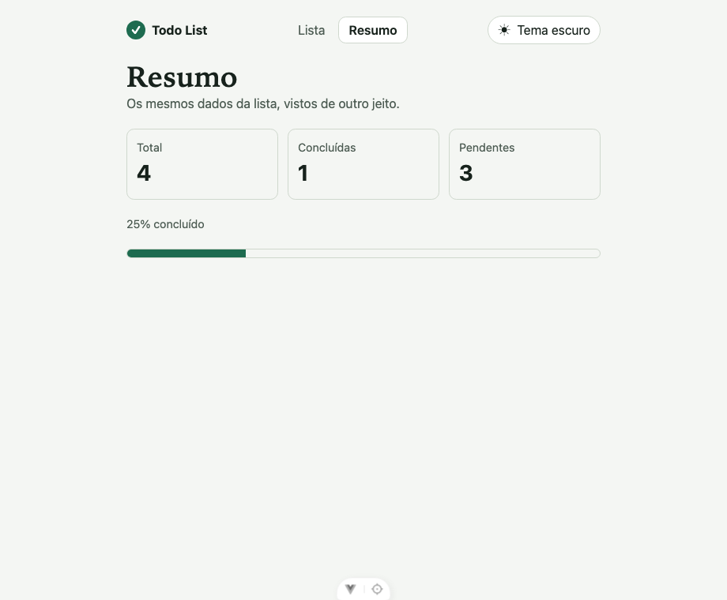

O endereço entra no jogo
Os três problemas da etapa 15 — link, F5 e botão Voltar — têm uma causa só: o endereço não participava. O Vue Router põe o endereço no comando. Em troca, ele exige uma decisão de arquitetura que vai ser a ponte para o Pinia.
| Critério | Evidência |
|---|---|
| O endereço muda | / e /resumo na barra do navegador |
| Sem recarregar | Network, filtro Doc: zero requisições ao navegar |
| F5 e Voltar | F5 em /resumo abre o Resumo; Voltar volta uma tela |
/resumo?
Quatro peças: tabela, instalação, link e buraco
export default createRouter({
history: createWebHistory(import.meta.env.BASE_URL),
routes: [
{ path: '/', name: 'lista', component: ListaView },
{ path: '/resumo', name: 'resumo', component: SobreView },
],
})createApp(App).use(router).mount('#app')<RouterLink to="/">Lista</RouterLink>
<RouterLink to="/resumo">Resumo</RouterLink>
<RouterView />| Peça | O que faz |
|---|---|
createWebHistory | Usa a History API: muda o endereço sem recarregar |
routes | Tabela endereço → componente |
.use(router) | Liga tudo: a partir daqui existem RouterLink, RouterView, useRoute, useRouter |
RouterLink | Vira um <a href> de verdade, com o clique interceptado |
RouterView | O buraco onde a tela do endereço atual é desenhada |
Zero requisições: a prova no Network
$ npm install vue-router
added 2 packages in 1sDuas dependências: vue-router e @vue/devtools-api. Confira no package.json.
# 1. Carregamento inicial
GET http://localhost:5173/ → 200 OK · text/html
# 2. Clique em "Resumo" (endereço vai para /resumo)
# 3. Clique em "Lista" (endereço volta para /)
# 4. Voltar e Avançar do navegador
(nenhuma requisição de documento)
Total nas quatro navegações: 0Registro completo: capturas/navegador/u5-e16-network-sem-recarga.txt.

Endereço: http://localhost:5173/resumo. O link ativo é marcado pelo próprio roteador.
No Elements, olhe o <a> do link ativo: o Vue Router pôs class="router-link-active router-link-exact-active" e aria-current="page" sozinho. O leitor de tela anuncia qual é a página atual sem você escrever nada.
ObserveO App.vue encolheu de 100 para 20 linhas de script. Para onde foram as tarefas?
Prática: instalar e ligar o roteador
- Ponto de partida
- A sua cópia da etapa 15. A pasta da etapa 16 já traz a solução.
- 1
npm install vue-routeresrc/router/index.jscom as duas rotas.- 2
.use(router)nomain.js, antes do.mount().- 3
- No
App.vue: doisRouterLinke umRouterView. Apague oreftelae os botões. - 4
- Estilo do link ativo com
.aba.router-link-exact-active. - Evidência
- Network com filtro Doc: zero requisições ao navegar. F5 em
/resumoabre o Resumo.
Dica 1
As views vão parar de receber props: o RouterView não passa nada. Antes de consertar isso, veja o slide 145 — é o assunto da aula.
Dica 2
Não escreva a classe do link ativo à mão: ela já vem. Só falta o CSS.
Mostrar solução (após a tentativa)
// src/router/index.js
import { createRouter, createWebHistory } from 'vue-router'
import ListaView from '../views/ListaView.vue'
import SobreView from '../views/SobreView.vue'
export default createRouter({
history: createWebHistory(import.meta.env.BASE_URL),
routes: [
{ path: '/', name: 'lista', component: ListaView },
{ path: '/resumo', name: 'resumo', component: SobreView },
],
})/* App.vue */
.aba.router-link-exact-active {
border-color: var(--cor-borda);
background: var(--cor-superficie);
font-weight: 600;
}O roteador quebrou as props — e isso é uma lição
<ListaView v-if="tela === 'lista'" :tarefas="tarefas" … /><RouterView /> <!-- e as props? -->Não há onde pendurar as props. O estado precisa sair da árvore de componentes e passar a morar num módulo.
// FORA da função: o módulo é carregado uma vez,
// então todos recebem exatamente os mesmos refs.
const tarefas = ref([…])
const busca = ref('')
export function useTarefas() {
return { tarefas, busca, /* … */ }
}Nas views: const { tarefas, visiveis } = useTarefas(). Sem props, sem eventos — as duas telas leem e escrevem no mesmo estado.
Playground: duas telas, um módulo só
Isto é estado global, e tem um preço: qualquer arquivo pode alterar as tarefas. A Unidade 7 troca este módulo por uma store do Pinia.
Investigação: funciona no dev, 404 em produção
O F5 em /resumo funciona no npm run dev. Vamos publicar e tentar de novo — servindo a pasta dist/ com o servidor do próprio curso, que só entrega arquivos.
$ npm run build
✓ built in 268ms
$ cd dist && node ../../ferramentas/servidor-local.mjs
$ curl -o /dev/null -w "%{http_code}\n" http://localhost:8088/
200
$ curl -o /dev/null -w "%{http_code}\n" http://localhost:8088/resumo
404
$ curl http://localhost:8088/resumo
Arquivo não encontrado: /resumoDica
O servidor não conhece as suas rotas. Ele recebeu /resumo e foi procurar um arquivo com esse nome dentro de dist/.
Mostrar as duas saídas
- Configurar o servidor para devolver
index.htmlem qualquer caminho desconhecido. É uma linha em Nginx, Apache, Netlify ou Vercel — cada um com sua sintaxe. createWebHashHistory: o endereço vira/#/resumo. O que vem depois do#nunca é enviado ao servidor, então ele sempre vê/e responde 200 (verificado). Em troca, endereços mais feios.
É o defeito de roteamento mais comum do mundo real: tudo funciona na máquina de quem programou e quebra no primeiro F5 depois de publicar. Registro em capturas/terminal/u5-e16-404-servidor-estatico.txt.
Pesquisar: a configuração do servidor para o seu caso
Tenho uma SPA Vue 3 com Vue Router 4 usando createWebHistory.
Em desenvolvimento tudo funciona; depois do build, abrir /resumo
direto no servidor devolve 404.
Explique a causa em duas frases e mostre a configuração para
[Nginx | Apache | Netlify | GitHub Pages], citando a página da
documentação oficial do Vue Router de onde tirou o exemplo.
Diga também o que muda se eu usar createWebHashHistory.| A resposta deve dizer | Sinal de resposta ruim |
|---|---|
O servidor devolve index.html em caminhos desconhecidos | Manda “desligar o history mode” sem explicar o custo |
| Cita a página “HTML5 History Mode” | Inventa um link que dá 404 |
| Avisa que o 404 de verdade passa a ser tratado pela aplicação | Não menciona isso (é a etapa 17) |
Hash: endereço com #, sem configurar servidor | Diz que hash e history são equivalentes |
Onde conferir
Esta é uma pergunta em que a IA ajuda muito: a resposta muda conforme o servidor, e a documentação traz um exemplo para cada um.
Verificação sem IA
- Quantas requisições de documento aparecem ao navegar entre duas rotas? Por quê?
- Por que o estado das tarefas saiu do
App.vuepara um composable? /resumofunciona nonpm run deve dá 404 depois de publicado. O que está faltando?